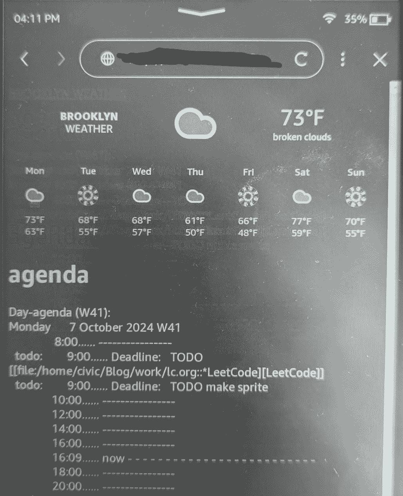

Weather agenda
1. Why
I like my paper calendar for the time being, I can write in events and its in a persistent spot that I know to check. I have a harder time getting my bearings in digital tools, but the ability to have things automatically show up when needed is something I want to mash together with my paper calendar. I don’t use my kindle paperwhite anymore, it was great for commuting, and wanted to put some new use to it. The initial idea was to show the weather and anything else I may need could be automatically shown as needed, think packages, agenda etc. I have for the time being settled on just showing my org mode agenda and a weather forecast.
2. How
3. What
This was initially a jekyll project via docker compose <-> jenkins but this proved to be difficult to do considering the permissions of all involved. This result is also way faster and has a much smaller file footprint. Jekyll fits my needs for this site, but for any personal project that’s more complex I think GO+HTMX is a clear winner for me.
I have opted to run a systemd service with the go webserver executable and run a systemd timer(cron is deprecated in NixOS) to run an emacs command to update my agenda. This is exposed to my local network which is where my kindle accesses it. I considered putting it on the internet and putting a password on it but I don’t plan to use this out of my local network.
Here is a nixos snippet for what I used to up the process:
systemd.timers."agenda" = {
wantedBy = [ "timers.target" ];
timerConfig = {
OnBootSec = "5m";
OnUnitActiveSec = "5m";
Unit = "agenda.service";
};
};
systemd.services."agenda" = {
path = with pkgs; [ emacs git];
script = ''
emacs -l /home/sahilm/.emacs -batch -eval '(org-batch-agenda "a" org-agenda-span (quote day))' > /your/webserver/directory/agenda.txt
'';
serviceConfig = {
Type = "oneshot";
User = "root";
};
};
systemd.services.kindlego = {
enable = true;
wantedBy = [ "multi-user.target" ];
after = [ "network.target" ];
serviceConfig = {
WorkingDirectory = "/your/webserver/directory/";
User = "your_username";
ExecStart = "/your/webserver/directory/binary";
};
};
The webserver responds on index to serve the main page, and replaces a div containing the agenda with an htmx swap periodically.

Figure 1: A photo of a kindle paperwhite displaying the weather and my agenda, the animations don’t fully work but I like them
It’s very simple at the moment but because of how it is setup it is a fully fledged hypermedia document, meaning I can simply add new services as routes, and display them as a part of the original document.
4. Next
- Package tracking
- text alerts are fine
- Sync Google Calendar
- helpful but I don’t use google calendar for much
- Interactive agenda
- should be doable via emacs eval and htmx -> go server
- Wall mounted holder
- ceramic or plastic 3d printed is what I am considering